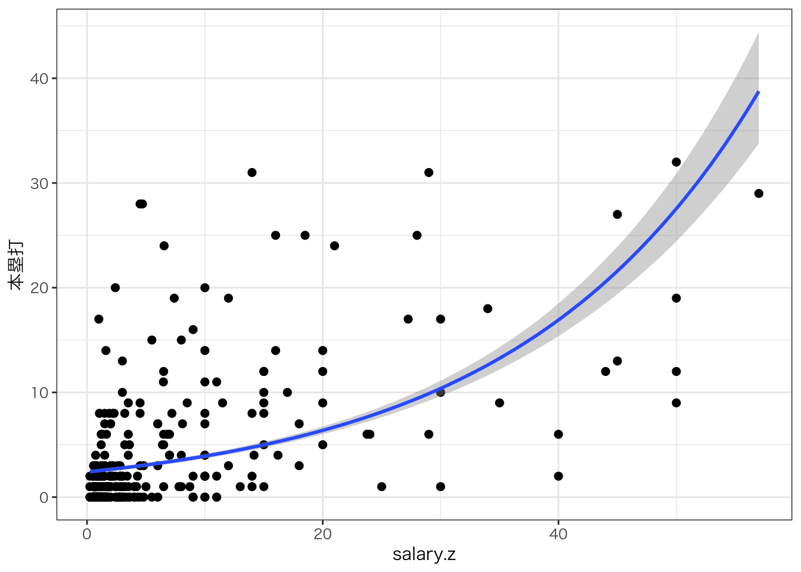

Day 3;2021.02.26
Day 3
library(tidyverse)
theme_set(theme_bw(base_family = "HiraKakuProN-W3"))
library(rstan)
rstan_options(auto_write = TRUE)
options(mc.cores = parallel::detectCores())一般化線形モデル
サンプルデータセットを使います。こちらからダウンロードし，プロジェクトフォルダに保存してください。 次のパッケージやコードを使って読み込みます。
library(tidyverse)
dat <- read_csv("baseball2020.csv") %>%
## データを処理しやすくするために，少し加工します。
# 文字列を要因型に変形
dplyr::mutate_if(is.character, as.factor) %>%
# セリーグとパリーグを作る
dplyr::mutate(league = if_else(team %in% c("Giants", "Tigers", "Carp", "Dragons", "Swallows", "DeNA"), 1, 2) %>%
factor(., labels = c("Central", "Pasific")))##
## ─ Column specification ────────────────────────────
## cols(
## .default = col_double(),
## Name = col_character(),
## team = col_character(),
## position = col_character(),
## bloodType = col_character(),
## throw.by = col_character(),
## batting.by = col_character(),
## birth.place = col_character(),
## birth.day = col_date(format = ""),
## 背番号 = col_character()
## )
## ℹ Use `spec()` for the full column specifications.データの分布を確認する
正規分布しそうなデータ
dat %>%
ggplot(aes(x = height)) +
geom_histogram()## `stat_bin()` using `bins = 30`. Pick better value with `binwidth`.dat %>%
ggplot(aes(x = height, y = weight)) +
geom_point() +
geom_smooth(method = "lm", se = FALSE)## `geom_smooth()` using formula 'y ~ x'正規分布とは呼べないデータ
サラリー
dat %>%
ggplot(aes(x = salary)) +
geom_histogram()## `stat_bin()` using `bins = 30`. Pick better value with `binwidth`.本塁打数
dat %>%
dplyr::filter(position != "投手") %>%
ggplot(aes(x = 本塁打)) +
geom_histogram()## `stat_bin()` using `bins = 30`. Pick better value with `binwidth`.## Warning: Removed 122 rows containing non-finite values (stat_bin).所属リーグ
dat %>%
ggplot(aes(x = league)) +
geom_histogram(stat = "count")## Warning: Ignoring unknown parameters: binwidth, bins, pad所属リーグとサラリーの組み合わせ
dat %>%
ggplot(aes(x = league, y = salary)) +
geom_point()一般化線形モデル
library(brms)## Loading required package: Rcpp## Loading 'brms' package (version 2.14.4). Useful instructions
## can be found by typing help('brms'). A more detailed introduction
## to the package is available through vignette('brms_overview').##
## Attaching package: 'brms'## The following object is masked from 'package:bridgesampling':
##
## bf## The following object is masked from 'package:rstan':
##
## loo## The following object is masked from 'package:stats':
##
## ar## 正規分布の場合
result.brm <- brm(height ~ weight, data = dat, family = gaussian())## Compiling Stan program...## Start samplingresult.brm## Family: gaussian
## Links: mu = identity; sigma = identity
## Formula: height ~ weight
## Data: dat (Number of observations: 934)
## Samples: 4 chains, each with iter = 2000; warmup = 1000; thin = 1;
## total post-warmup samples = 4000
##
## Population-Level Effects:
## Estimate Est.Error l-95% CI u-95% CI Rhat Bulk_ESS Tail_ESS
## Intercept 146.87 1.41 144.16 149.56 1.00 3944 2289
## weight 0.40 0.02 0.37 0.43 1.00 3939 2591
##
## Family Specific Parameters:
## Estimate Est.Error l-95% CI u-95% CI Rhat Bulk_ESS Tail_ESS
## sigma 4.48 0.11 4.28 4.70 1.00 3777 2702
##
## Samples were drawn using sampling(NUTS). For each parameter, Bulk_ESS
## and Tail_ESS are effective sample size measures, and Rhat is the potential
## scale reduction factor on split chains (at convergence, Rhat = 1).## 対数正規分布の場合
result.logN <- brm(salary ~ 本塁打, data = dat, family = lognormal())## Warning: Rows containing NAs were excluded from the model.## Compiling Stan program...## Start samplingresult.logN## Family: lognormal
## Links: mu = identity; sigma = identity
## Formula: salary ~ 本塁打
## Data: dat (Number of observations: 329)
## Samples: 4 chains, each with iter = 2000; warmup = 1000; thin = 1;
## total post-warmup samples = 4000
##
## Population-Level Effects:
## Estimate Est.Error l-95% CI u-95% CI Rhat Bulk_ESS Tail_ESS
## Intercept 7.38 0.07 7.25 7.51 1.00 3960 3419
## \u672c\u5841\u6253 0.12 0.01 0.10 0.14 1.00 4666 3381
##
## Family Specific Parameters:
## Estimate Est.Error l-95% CI u-95% CI Rhat Bulk_ESS Tail_ESS
## sigma 1.03 0.04 0.95 1.11 1.00 3765 2942
##
## Samples were drawn using sampling(NUTS). For each parameter, Bulk_ESS
## and Tail_ESS are effective sample size measures, and Rhat is the potential
## scale reduction factor on split chains (at convergence, Rhat = 1).plot(result.logN)result.N <- brm(salary ~ 本塁打, data = dat, family = gaussian())## Warning: Rows containing NAs were excluded from the model.## Compiling Stan program...
## Start sampling## 適合度比較
waic(result.N)## Warning:
## 10 (3.0%) p_waic estimates greater than 0.4. We recommend trying loo instead.##
## Computed from 4000 by 329 log-likelihood matrix
##
## Estimate SE
## elpd_waic -3424.0 29.2
## p_waic 9.6 2.2
## waic 6848.0 58.4
##
## 10 (3.0%) p_waic estimates greater than 0.4. We recommend trying loo instead.waic(result.logN)##
## Computed from 4000 by 329 log-likelihood matrix
##
## Estimate SE
## elpd_waic -3057.5 29.6
## p_waic 3.0 0.4
## waic 6115.1 59.3## ポアソン分布の場合
### データのサイズ調整
dat$salary.z <- dat$salary / 1000
result.pois <- brm(本塁打 ~ salary.z, data = dat, family = poisson())## Warning: Rows containing NAs were excluded from the model.## Compiling Stan program...## Start samplingresult.pois## Family: poisson
## Links: mu = log
## Formula: 本塁打 ~ salary.z
## Data: dat (Number of observations: 329)
## Samples: 4 chains, each with iter = 2000; warmup = 1000; thin = 1;
## total post-warmup samples = 4000
##
## Population-Level Effects:
## Estimate Est.Error l-95% CI u-95% CI Rhat Bulk_ESS Tail_ESS
## Intercept 0.88 0.04 0.80 0.95 1.00 1005 1181
## salary.z 0.05 0.00 0.05 0.05 1.00 2128 2488
##
## Samples were drawn using sampling(NUTS). For each parameter, Bulk_ESS
## and Tail_ESS are effective sample size measures, and Rhat is the potential
## scale reduction factor on split chains (at convergence, Rhat = 1).eff <- conditional_effects(result.pois, effects = "salary.z")
plot(eff, points = T)
検定(要因計画)の別解
result.test <- brm(height ~ league, data = dat, family = gaussian())## Compiling Stan program...## Start samplingresult.test## Family: gaussian
## Links: mu = identity; sigma = identity
## Formula: height ~ league
## Data: dat (Number of observations: 934)
## Samples: 4 chains, each with iter = 2000; warmup = 1000; thin = 1;
## total post-warmup samples = 4000
##
## Population-Level Effects:
## Estimate Est.Error l-95% CI u-95% CI Rhat Bulk_ESS Tail_ESS
## Intercept 180.98 0.27 180.46 181.48 1.00 3897 3352
## leaguePasific -0.41 0.37 -1.14 0.34 1.00 4087 3130
##
## Family Specific Parameters:
## Estimate Est.Error l-95% CI u-95% CI Rhat Bulk_ESS Tail_ESS
## sigma 5.71 0.13 5.46 5.98 1.00 4019 2906
##
## Samples were drawn using sampling(NUTS). For each parameter, Bulk_ESS
## and Tail_ESS are effective sample size measures, and Rhat is the potential
## scale reduction factor on split chains (at convergence, Rhat = 1).conditional_effects(result.test, effects = "league")result.test2 <- brm(本塁打 ~ league, data = dat, family = poisson())## Warning: Rows containing NAs were excluded from the model.## Compiling Stan program...## recompiling to avoid crashing R session## Start samplingresult.test2## Family: poisson
## Links: mu = log
## Formula: 本塁打 ~ league
## Data: dat (Number of observations: 329)
## Samples: 4 chains, each with iter = 2000; warmup = 1000; thin = 1;
## total post-warmup samples = 4000
##
## Population-Level Effects:
## Estimate Est.Error l-95% CI u-95% CI Rhat Bulk_ESS Tail_ESS
## Intercept 1.40 0.04 1.32 1.47 1.00 3143 2698
## leaguePasific -0.07 0.06 -0.18 0.04 1.00 3020 2474
##
## Samples were drawn using sampling(NUTS). For each parameter, Bulk_ESS
## and Tail_ESS are effective sample size measures, and Rhat is the potential
## scale reduction factor on split chains (at convergence, Rhat = 1).conditional_effects(result.test2, effects = "league")一般化線形混合モデル
切片が球団ごとに異なるモデル
# 野手のデータだけにしておく
dat2 <- dat %>% dplyr::filter(position != "投手")
result.hlm1 <- brm(salary.z ~ 安打 + (1 | team), data = dat2, family = lognormal())## Warning: Rows containing NAs were excluded from the model.## Compiling Stan program...## Start samplingresult.hlm1## Family: lognormal
## Links: mu = identity; sigma = identity
## Formula: salary.z ~ 安打 + (1 | team)
## Data: dat2 (Number of observations: 329)
## Samples: 4 chains, each with iter = 2000; warmup = 1000; thin = 1;
## total post-warmup samples = 4000
##
## Group-Level Effects:
## ~team (Number of levels: 12)
## Estimate Est.Error l-95% CI u-95% CI Rhat Bulk_ESS Tail_ESS
## sd(Intercept) 0.10 0.07 0.00 0.28 1.00 1601 1913
##
## Population-Level Effects:
## Estimate Est.Error l-95% CI u-95% CI Rhat Bulk_ESS Tail_ESS
## Intercept 0.18 0.08 0.03 0.34 1.00 3019 2733
## \u5b89\u6253 0.02 0.00 0.02 0.02 1.00 4239 2511
##
## Family Specific Parameters:
## Estimate Est.Error l-95% CI u-95% CI Rhat Bulk_ESS Tail_ESS
## sigma 0.96 0.04 0.89 1.03 1.00 4153 2949
##
## Samples were drawn using sampling(NUTS). For each parameter, Bulk_ESS
## and Tail_ESS are effective sample size measures, and Rhat is the potential
## scale reduction factor on split chains (at convergence, Rhat = 1).## チームごとの推定値を確認
ranef(result.hlm1)## $team
## , , Intercept
##
## Estimate Est.Error Q2.5 Q97.5
## Carp -0.024817990 0.09437968 -0.23423113 0.1544905
## DeNA 0.008173871 0.09119973 -0.17955604 0.2183148
## Dragons -0.049907875 0.10164521 -0.30084502 0.1136659
## Eagles -0.041537404 0.09500178 -0.27455441 0.1224556
## Fighters -0.023504514 0.09619748 -0.25111039 0.1571680
## Giants 0.037052595 0.09668337 -0.12881396 0.2785603
## Lions -0.010890450 0.09772029 -0.23811552 0.1944396
## Lotte -0.007886250 0.08858884 -0.20344137 0.1801143
## Orix -0.011081197 0.09008288 -0.21574248 0.1693031
## Softbank 0.109566202 0.13302904 -0.04950481 0.4393279
## Swallows -0.031732963 0.09186512 -0.24732647 0.1362670
## Tigers 0.043645258 0.10038326 -0.12931173 0.2872633conditional_effects(result.hlm1)conds <- data.frame(team = dat2$team %>% levels())
eff <- conditional_effects(result.hlm1,
effects = "安打",
re_formula = NULL, conditions = conds
)
plot(eff, points = T)
傾きも球団ごとに異なるモデル
result.hlm2 <- brm(salary.z ~ 安打 + (安打 | team), data = dat2, family = lognormal())## Warning: Rows containing NAs were excluded from the model.## Compiling Stan program...## Start sampling## Warning: There were 3 divergent transitions after warmup. See
## http://mc-stan.org/misc/warnings.html#divergent-transitions-after-warmup
## to find out why this is a problem and how to eliminate them.## Warning: Examine the pairs() plot to diagnose sampling problemsresult.hlm2## Warning: There were 3 divergent transitions after warmup. Increasing adapt_delta
## above 0.8 may help. See http://mc-stan.org/misc/warnings.html#divergent-
## transitions-after-warmup## Family: lognormal
## Links: mu = identity; sigma = identity
## Formula: salary.z ~ 安打 + (安打 | team)
## Data: dat2 (Number of observations: 329)
## Samples: 4 chains, each with iter = 2000; warmup = 1000; thin = 1;
## total post-warmup samples = 4000
##
## Group-Level Effects:
## ~team (Number of levels: 12)
## Estimate Est.Error l-95% CI u-95% CI Rhat Bulk_ESS
## sd(Intercept) 0.11 0.08 0.01 0.31 1.00 1499
## sd(\u5b89\u6253) 0.00 0.00 0.00 0.00 1.00 1952
## cor(Intercept,\u5b89\u6253) -0.17 0.57 -0.97 0.91 1.00 3271
## Tail_ESS
## sd(Intercept) 1753
## sd(\u5b89\u6253) 1971
## cor(Intercept,\u5b89\u6253) 2587
##
## Population-Level Effects:
## Estimate Est.Error l-95% CI u-95% CI Rhat Bulk_ESS Tail_ESS
## Intercept 0.18 0.08 0.02 0.34 1.00 3505 2485
## \u5b89\u6253 0.02 0.00 0.02 0.02 1.00 3976 3017
##
## Family Specific Parameters:
## Estimate Est.Error l-95% CI u-95% CI Rhat Bulk_ESS Tail_ESS
## sigma 0.95 0.04 0.88 1.03 1.00 4380 2935
##
## Samples were drawn using sampling(NUTS). For each parameter, Bulk_ESS
## and Tail_ESS are effective sample size measures, and Rhat is the potential
## scale reduction factor on split chains (at convergence, Rhat = 1).## チームごとの推定値を確認
ranef(result.hlm2)## $team
## , , Intercept
##
## Estimate Est.Error Q2.5 Q97.5
## Carp -0.023035199 0.10395169 -0.26772738 0.1776928
## DeNA 0.018603318 0.10469899 -0.18492897 0.2641080
## Dragons -0.050210671 0.11183940 -0.32046289 0.1360197
## Eagles -0.036292103 0.10653060 -0.28724811 0.1518490
## Fighters -0.024694935 0.10855535 -0.27784818 0.1900878
## Giants 0.039267060 0.11103048 -0.16253986 0.2990602
## Lions -0.032969455 0.11294121 -0.31100170 0.1717359
## Lotte -0.004614022 0.10510965 -0.23191048 0.2298761
## Orix -0.021744015 0.09963081 -0.25019260 0.1797194
## Softbank 0.105571024 0.14575857 -0.08513625 0.4887990
## Swallows -0.032539566 0.10171284 -0.27770555 0.1500875
## Tigers 0.056173080 0.11821025 -0.13456064 0.3455369
##
## , , 安打
##
## Estimate Est.Error Q2.5 Q97.5
## Carp -2.980621e-05 0.001575467 -0.003502974 0.003450854
## DeNA -5.427798e-04 0.001712564 -0.004833303 0.002378147
## Dragons -2.322772e-04 0.001683358 -0.004082854 0.003370228
## Eagles -4.179279e-04 0.001703713 -0.004453634 0.002768588
## Fighters -9.904100e-05 0.001616115 -0.003762890 0.003321055
## Giants 4.601432e-05 0.001681761 -0.003599941 0.003704559
## Lions 9.853348e-04 0.001989618 -0.001730070 0.006315060
## Lotte -1.817152e-04 0.001723932 -0.004125268 0.003493297
## Orix 4.528431e-04 0.001697028 -0.002552706 0.004765995
## Softbank 6.210561e-04 0.002018808 -0.003170163 0.005761577
## Swallows -1.844286e-04 0.001627223 -0.003988465 0.003174126
## Tigers -3.938459e-04 0.001737729 -0.004697592 0.002798426conditional_effects(result.hlm2)eff <- conditional_effects(result.hlm2,
effects = "安打",
re_formula = NULL, conditions = conds
)
plot(eff, points = T)さまざまな統計モデリング
7人の科学者
## データの準備
X <- c(-27.020, 3.570, 8.191, 9.808, 9.603, 9.945, 10.056)
sc7 <- list(N = NROW(X), X = X)## モデルコンパイル
model <- stan_model("SevenScientist.stan")## data{
## int<lower=0> N;
## real X[N];
## }
##
## parameters{
## real mu;
## real<lower=0> sig[N];
## }
##
## model{
## for(n in 1:N){
## //likelihood
## X[n] ~ normal(mu,sig[n]);
## //prior
## sig[n] ~ inv_gamma(0.0001,0.0001);
## }
## // prior
## mu ~ normal(0,1000);
## }## 推定
fit.sc7 <- sampling(model, sc7, iter = 10000)## Warning: There were 6519 divergent transitions after warmup. See
## http://mc-stan.org/misc/warnings.html#divergent-transitions-after-warmup
## to find out why this is a problem and how to eliminate them.## Warning: Examine the pairs() plot to diagnose sampling problems## Warning: The largest R-hat is 1.14, indicating chains have not mixed.
## Running the chains for more iterations may help. See
## http://mc-stan.org/misc/warnings.html#r-hat## Warning: Bulk Effective Samples Size (ESS) is too low, indicating posterior means and medians may be unreliable.
## Running the chains for more iterations may help. See
## http://mc-stan.org/misc/warnings.html#bulk-ess## Warning: Tail Effective Samples Size (ESS) is too low, indicating posterior variances and tail quantiles may be unreliable.
## Running the chains for more iterations may help. See
## http://mc-stan.org/misc/warnings.html#tail-ess## 表示
fit.sc7## Inference for Stan model: SevenScientist.
## 4 chains, each with iter=10000; warmup=5000; thin=1;
## post-warmup draws per chain=5000, total post-warmup draws=20000.
##
## mean se_mean sd 2.5% 25% 50% 75% 97.5% n_eff Rhat
## mu 9.87 0.01 0.11 9.60 9.81 9.82 9.95 10.06 146 1.03
## sig[1] 218.90 45.99 1879.60 15.03 26.17 47.37 97.90 715.13 1670 1.00
## sig[2] 31.37 3.30 171.48 2.96 6.08 11.95 21.14 148.48 2697 1.00
## sig[3] 12.08 2.57 131.77 0.68 1.54 2.99 6.73 36.89 2636 1.00
## sig[4] 0.60 0.13 7.79 0.00 0.00 0.09 0.29 2.72 3449 1.00
## sig[5] 2.06 0.60 34.93 0.03 0.18 0.40 0.94 5.91 3405 1.00
## sig[6] 0.86 0.16 11.48 0.00 0.05 0.11 0.30 3.26 5029 1.00
## sig[7] 1.18 0.20 14.58 0.01 0.11 0.25 0.66 4.10 5087 1.00
## lp__ -4.10 0.32 2.63 -10.07 -5.64 -3.84 -2.09 -0.32 68 1.05
##
## Samples were drawn using NUTS(diag_e) at Sat Feb 20 11:43:00 2021.
## For each parameter, n_eff is a crude measure of effective sample size,
## and Rhat is the potential scale reduction factor on split chains (at
## convergence, Rhat=1).## 描画
plot(fit.sc7, pars = c(
"sig[1]", "sig[2]", "sig[3]", "sig[4]",
"sig[5]", "sig[6]", "sig[7]"
), show_density = T)## ci_level: 0.8 (80% intervals)## outer_level: 0.95 (95% intervals)変化点検出
データセットを。こちらからダウンロードし，プロジェクトフォルダに保存してください。
x <- scan("changepointdata.txt")
n <- length(x)
t <- 1:n
datapoints <- list(X = x, N = n, TIME = t)## data{
## int<lower=0> N; // Number of record
## int<lower=0> TIME[N];// Time
## real X[N];
## }
##
## parameters{
## vector<lower=0>[2] mu;
## real<lower=0> sigma;
## real<lower=0,upper=N> tau;
## }
##
##
## model{
## //prior
## mu[1] ~ normal(0,1000);
## mu[2] ~ normal(0,1000);
## sigma ~ cauchy(0,5);
##
## //likelihood
## for(n in 1:N){
## if(TIME[n]> tau){
## X[n] ~ normal(mu[2],sigma);
## } else {
## X[n] ~ normal(mu[1],sigma);
## }
## }
##
## tau ~ uniform(0,N);
## }model.cd <- stan_model("ChangeDetection.stan")
fit.cd <- sampling(model.cd, datapoints, iter = 5000)## Warning: There were 9876 transitions after warmup that exceeded the maximum treedepth. Increase max_treedepth above 10. See
## http://mc-stan.org/misc/warnings.html#maximum-treedepth-exceeded## Warning: Examine the pairs() plot to diagnose sampling problems## Warning: Bulk Effective Samples Size (ESS) is too low, indicating posterior means and medians may be unreliable.
## Running the chains for more iterations may help. See
## http://mc-stan.org/misc/warnings.html#bulk-ess## Warning: Tail Effective Samples Size (ESS) is too low, indicating posterior variances and tail quantiles may be unreliable.
## Running the chains for more iterations may help. See
## http://mc-stan.org/misc/warnings.html#tail-essprint(fit.cd)## Inference for Stan model: ChangeDetection.
## 4 chains, each with iter=5000; warmup=2500; thin=1;
## post-warmup draws per chain=2500, total post-warmup draws=10000.
##
## mean se_mean sd 2.5% 25% 50% 75% 97.5% n_eff
## mu[1] 37.90 0.01 0.26 37.40 37.72 37.89 38.07 38.43 385
## mu[2] 30.59 0.02 0.32 30.00 30.39 30.59 30.78 31.26 168
## sigma 6.86 0.01 0.14 6.59 6.76 6.86 6.96 7.16 376
## tau 732.33 0.10 2.36 728.73 731.08 731.75 733.78 737.98 545
## lp__ -2841.91 0.08 1.70 -2846.05 -2842.76 -2841.65 -2840.81 -2839.48 456
## Rhat
## mu[1] 1.01
## mu[2] 1.03
## sigma 1.01
## tau 1.00
## lp__ 1.01
##
## Samples were drawn using NUTS(diag_e) at Sat Feb 20 11:57:41 2021.
## For each parameter, n_eff is a crude measure of effective sample size,
## and Rhat is the potential scale reduction factor on split chains (at
## convergence, Rhat=1).df <- transform(x)
Ms <- rstan::get_posterior_mean(fit.cd, pars = "mu")[, 5]
point <- rstan::extract(fit.cd, pars = "tau")$tau %>%
as.numeric() %>%
median() %>%
round()
df %>%
mutate(Mu = c(rep(Ms[1], point), rep(Ms[2], n - point))) %>%
mutate(num = row_number()) %>%
ggplot(aes(x = num, y = X_data)) +
geom_line(alpha = 0.5) +
geom_point(aes(y = Mu), color = "blue")欠損値のある相関データ
library(MASS)##
## Attaching package: 'MASS'## The following object is masked from 'package:dplyr':
##
## selectN <- 200
mu <- c(50, 60)
sd <- c(10, 10)
rho <- 0.7
Sig <- matrix(nrow = 2, ncol = 2)
Sig[1, 1] <- sd[1] * sd[1]
Sig[1, 2] <- sd[1] * sd[2] * rho
Sig[2, 1] <- sd[2] * sd[1] * rho
Sig[2, 2] <- sd[2] * sd[2]
# 乱数の発生
X <- mvrnorm(N, mu, Sig, empirical = T)dat <- data.frame(X)
dat$FLG <- factor(ifelse(dat$X1 > 40, 1, 2), labels = c("pass", "fail"))
# 描画
g <- ggplot(dat, aes(x = X1, y = X2, group = FLG, color = FLG)) +
geom_point()
g# 相関係数の算出
### データ全体の場合
cor(X)## [,1] [,2]
## [1,] 1.0 0.7
## [2,] 0.7 1.0### 選抜効果
cor(X[X[, 1] > 40, ])## [,1] [,2]
## [1,] 1.0000000 0.6255368
## [2,] 0.6255368 1.0000000# 欠損値を作る
X[, 2] <- ifelse(X[, 1] <= 40, NA, X[, 2])
# 欠損値のあるデータとそうでないデータに分ける
completeX <- subset(X, X[, 1] > 40)
missingX <- subset(X[, 1], X[, 1] <= 40)
dataset <- list(
Nobs = nrow(completeX), Nmiss = length(missingX),
obsX = completeX, missX = missingX
)## data{
## int<lower=0> Nobs;
## int<lower=0> Nmiss;
## vector[2] obsX[Nobs];
## real missX[Nmiss];
## }
##
## parameters{
## vector[2] mu;
## real<lower=0> sd1;
## real<lower=0> sd2;
## real<lower=0,upper=1> rho;
## }
##
## transformed parameters{
## cov_matrix[2] Sig;
## Sig[1,1] = sd1 * sd1;
## Sig[2,2] = sd2 * sd2;
## Sig[1,2] = sd1 * sd2 * rho;
## Sig[2,1] = sd2 * sd1 * rho;
## }
##
## model{
## obsX ~ multi_normal(mu,Sig);
## missX ~ normal(mu[1],sd1);
##
## mu[1] ~ normal(0,1000);
## mu[2] ~ normal(0,1000);
## sd1 ~ cauchy(0,5);
## sd2 ~ cauchy(0,5);
## }model.MC <- stan_model("missing_corr.stan", model_name = "Missing Corr")
fit.MC <- sampling(model.MC, dataset)
print(fit.MC, pars = c("mu", "sd1", "sd2", "rho"))## Inference for Stan model: Missing Corr.
## 4 chains, each with iter=2000; warmup=1000; thin=1;
## post-warmup draws per chain=1000, total post-warmup draws=4000.
##
## mean se_mean sd 2.5% 25% 50% 75% 97.5% n_eff Rhat
## mu[1] 50.01 0.01 0.72 48.59 49.52 50.00 50.49 51.42 2786 1
## mu[2] 59.80 0.02 0.79 58.22 59.28 59.79 60.33 61.37 2462 1
## sd1 9.98 0.01 0.49 9.06 9.63 9.97 10.30 10.99 3353 1
## sd2 10.24 0.01 0.63 9.10 9.80 10.21 10.66 11.54 2502 1
## rho 0.71 0.00 0.04 0.61 0.68 0.71 0.74 0.78 2766 1
##
## Samples were drawn using NUTS(diag_e) at Sat Feb 20 11:57:58 2021.
## For each parameter, n_eff is a crude measure of effective sample size,
## and Rhat is the potential scale reduction factor on split chains (at
## convergence, Rhat=1).plot(fit.MC, pars = c("rho"), show_density = TRUE)## ci_level: 0.8 (80% intervals)## outer_level: 0.95 (95% intervals)テスト理論のモデル
## データセット
k1 <- c(
1, 1, 1, 1, 0, 0, 1, 1, 0, 1, 0, 0, 1, 0, 0, 1, 0, 1, 0, 0,
0, 1, 1, 0, 0, 0, 0, 0, 0, 0, 0, 0, 0, 0, 0, 0, 0, 0, 0, 0,
0, 0, 1, 0, 0, 0, 1, 1, 0, 0, 0, 0, 1, 0, 0, 0, 0, 0, 0, 0,
0, 0, 0, 0, 0, 0, 1, 0, 1, 1, 0, 0, 0, 0, 0, 0, 0, 0, 0, 0,
1, 0, 1, 1, 0, 1, 1, 1, 0, 1, 0, 0, 1, 0, 0, 0, 0, 1, 0, 0,
1, 1, 0, 1, 0, 0, 0, 1, 0, 1, 0, 1, 1, 0, 0, 1, 0, 1, 0, 0,
0, 0, 0, 0, 0, 0, 0, 0, 0, 0, 0, 1, 0, 0, 0, 0, 0, 0, 0, 0,
0, 0, 0, 0, 0, 0, 0, 0, 0, 0, 0, 0, 0, 0, 0, 0, 0, 0, 0, 0,
0, 1, 1, 0, 0, 0, 0, 1, 0, 1, 0, 0, 1, 0, 0, 0, 0, 1, 0, 1,
1, 0, 0, 0, 0, 0, 1, 0, 0, 1, 0, 0, 1, 0, 0, 0, 0, 0, 0, 0
)
k <- matrix(k1, nrow = 10, byrow = T)
np <- NROW(k)
nq <- NCOL(k)
dataset <- list(N = np, M = nq, K = k)## data{
## int<lower=0> N; //number of persons
## int<lower=0> M; //number of questions
## int K[N,M];
## }
##
## parameters{
## real<lower=0,upper=1> p[N];
## real<lower=0,upper=1> q[M];
## }
##
## transformed parameters{
## real<lower=0,upper=1> theta[N,M];
## for(n in 1:N){
## for(m in 1:M){
## theta[n,m] = p[n] * q[m];
## }
## }
## }
##
## model{
## for(n in 1:N){
## for(m in 1:M){
## K[n,m] ~ bernoulli(theta[n,m]);
## }
## }
## p ~ beta(1,1);
## q ~ beta(1,1);
## }model.IRT1 <- stan_model("TwentyQuestions.stan")
fit.IRT1 <- sampling(model.IRT1, dataset)
print(fit.IRT1, pars = c("p"))## Inference for Stan model: TwentyQuestions.
## 4 chains, each with iter=2000; warmup=1000; thin=1;
## post-warmup draws per chain=1000, total post-warmup draws=4000.
##
## mean se_mean sd 2.5% 25% 50% 75% 97.5% n_eff Rhat
## p[1] 0.89 0 0.10 0.65 0.84 0.92 0.97 1.00 4915 1
## p[2] 0.28 0 0.14 0.07 0.17 0.26 0.36 0.59 4507 1
## p[3] 0.48 0 0.17 0.18 0.35 0.46 0.59 0.84 2925 1
## p[4] 0.36 0 0.15 0.11 0.24 0.34 0.46 0.71 4506 1
## p[5] 0.85 0 0.12 0.56 0.78 0.87 0.94 0.99 5275 1
## p[6] 0.82 0 0.12 0.53 0.75 0.84 0.92 0.99 4031 1
## p[7] 0.18 0 0.12 0.02 0.09 0.16 0.24 0.47 4988 1
## p[8] 0.09 0 0.09 0.00 0.03 0.07 0.13 0.33 5172 1
## p[9] 0.72 0 0.15 0.41 0.61 0.73 0.84 0.97 3643 1
## p[10] 0.48 0 0.17 0.18 0.36 0.47 0.59 0.86 3241 1
##
## Samples were drawn using NUTS(diag_e) at Sat Feb 20 11:58:02 2021.
## For each parameter, n_eff is a crude measure of effective sample size,
## and Rhat is the potential scale reduction factor on split chains (at
## convergence, Rhat=1).print(fit.IRT1, pars = c("q"))## Inference for Stan model: TwentyQuestions.
## 4 chains, each with iter=2000; warmup=1000; thin=1;
## post-warmup draws per chain=1000, total post-warmup draws=4000.
##
## mean se_mean sd 2.5% 25% 50% 75% 97.5% n_eff Rhat
## q[1] 0.74 0 0.18 0.35 0.61 0.76 0.88 0.99 4765 1
## q[2] 0.70 0 0.18 0.30 0.57 0.71 0.85 0.98 5587 1
## q[3] 0.77 0 0.16 0.41 0.66 0.79 0.90 0.99 4141 1
## q[4] 0.65 0 0.21 0.23 0.49 0.67 0.82 0.98 4091 1
## q[5] 0.15 0 0.14 0.00 0.05 0.11 0.22 0.52 5924 1
## q[6] 0.31 0 0.18 0.04 0.17 0.28 0.42 0.73 5202 1
## q[7] 0.75 0 0.16 0.39 0.64 0.77 0.88 0.99 4090 1
## q[8] 0.81 0 0.15 0.46 0.73 0.85 0.93 0.99 5550 1
## q[9] 0.28 0 0.17 0.04 0.15 0.26 0.39 0.69 4886 1
## q[10] 0.85 0 0.13 0.53 0.79 0.89 0.95 1.00 5346 1
## q[11] 0.16 0 0.14 0.00 0.05 0.12 0.23 0.53 5667 1
## q[12] 0.42 0 0.19 0.12 0.29 0.41 0.55 0.83 3847 1
## q[13] 0.85 0 0.12 0.54 0.79 0.89 0.95 1.00 6441 1
## q[14] 0.15 0 0.14 0.00 0.04 0.11 0.22 0.50 5222 1
## q[15] 0.15 0 0.14 0.00 0.05 0.11 0.22 0.51 5102 1
## q[16] 0.48 0 0.21 0.13 0.32 0.46 0.63 0.89 4302 1
## q[17] 0.15 0 0.14 0.00 0.05 0.11 0.22 0.51 5905 1
## q[18] 0.76 0 0.17 0.37 0.64 0.78 0.90 0.99 6048 1
## q[19] 0.15 0 0.14 0.00 0.05 0.11 0.22 0.52 5273 1
## q[20] 0.30 0 0.17 0.04 0.17 0.28 0.41 0.70 4215 1
##
## Samples were drawn using NUTS(diag_e) at Sat Feb 20 11:58:02 2021.
## For each parameter, n_eff is a crude measure of effective sample size,
## and Rhat is the potential scale reduction factor on split chains (at
## convergence, Rhat=1).## データセットを縦長にする
k2 <- k %>%
as.data.frame() %>%
rowid_to_column("id") %>%
pivot_longer(-id, names_to = "Qid") %>%
mutate(Qid = factor(Qid)) %>%
print()## # A tibble: 200 x 3
## id Qid value
## <int> <fct> <dbl>
## 1 1 V1 1
## 2 1 V2 1
## 3 1 V3 1
## 4 1 V4 1
## 5 1 V5 0
## 6 1 V6 0
## 7 1 V7 1
## 8 1 V8 1
## 9 1 V9 0
## 10 1 V10 1
## # … with 190 more rowsdataset <- list(
L = nrow(k2), N = 10, M = 20,
Pid = as.numeric(k2$id),
Qid = as.numeric(k2$Qid),
resp = k2$value
)
## データセット確認
dataset## $L
## [1] 200
##
## $N
## [1] 10
##
## $M
## [1] 20
##
## $Pid
## [1] 1 1 1 1 1 1 1 1 1 1 1 1 1 1 1 1 1 1 1 1 2 2 2 2 2
## [26] 2 2 2 2 2 2 2 2 2 2 2 2 2 2 2 3 3 3 3 3 3 3 3 3 3
## [51] 3 3 3 3 3 3 3 3 3 3 4 4 4 4 4 4 4 4 4 4 4 4 4 4 4
## [76] 4 4 4 4 4 5 5 5 5 5 5 5 5 5 5 5 5 5 5 5 5 5 5 5 5
## [101] 6 6 6 6 6 6 6 6 6 6 6 6 6 6 6 6 6 6 6 6 7 7 7 7 7
## [126] 7 7 7 7 7 7 7 7 7 7 7 7 7 7 7 8 8 8 8 8 8 8 8 8 8
## [151] 8 8 8 8 8 8 8 8 8 8 9 9 9 9 9 9 9 9 9 9 9 9 9 9 9
## [176] 9 9 9 9 9 10 10 10 10 10 10 10 10 10 10 10 10 10 10 10 10 10 10 10 10
##
## $Qid
## [1] 1 12 14 15 16 17 18 19 20 2 3 4 5 6 7 8 9 10 11 13 1 12 14 15 16
## [26] 17 18 19 20 2 3 4 5 6 7 8 9 10 11 13 1 12 14 15 16 17 18 19 20 2
## [51] 3 4 5 6 7 8 9 10 11 13 1 12 14 15 16 17 18 19 20 2 3 4 5 6 7
## [76] 8 9 10 11 13 1 12 14 15 16 17 18 19 20 2 3 4 5 6 7 8 9 10 11 13
## [101] 1 12 14 15 16 17 18 19 20 2 3 4 5 6 7 8 9 10 11 13 1 12 14 15 16
## [126] 17 18 19 20 2 3 4 5 6 7 8 9 10 11 13 1 12 14 15 16 17 18 19 20 2
## [151] 3 4 5 6 7 8 9 10 11 13 1 12 14 15 16 17 18 19 20 2 3 4 5 6 7
## [176] 8 9 10 11 13 1 12 14 15 16 17 18 19 20 2 3 4 5 6 7 8 9 10 11 13
##
## $resp
## [1] 1 1 1 1 0 0 1 1 0 1 0 0 1 0 0 1 0 1 0 0 0 1 1 0 0 0 0 0 0 0 0 0 0 0 0 0 0
## [38] 0 0 0 0 0 1 0 0 0 1 1 0 0 0 0 1 0 0 0 0 0 0 0 0 0 0 0 0 0 1 0 1 1 0 0 0 0
## [75] 0 0 0 0 0 0 1 0 1 1 0 1 1 1 0 1 0 0 1 0 0 0 0 1 0 0 1 1 0 1 0 0 0 1 0 1 0
## [112] 1 1 0 0 1 0 1 0 0 0 0 0 0 0 0 0 0 0 0 0 1 0 0 0 0 0 0 0 0 0 0 0 0 0 0 0 0
## [149] 0 0 0 0 0 0 0 0 0 0 0 0 0 1 1 0 0 0 0 1 0 1 0 0 1 0 0 0 0 1 0 1 1 0 0 0 0
## [186] 0 1 0 0 1 0 0 1 0 0 0 0 0 0 0## data{
## int<lower=0> L; // data length
## int<lower=0> N; // number of persons
## int<lower=0> M; // number of questions
## int<lower=0> Pid[L]; // personal ID
## int<lower=0> Qid[L]; // question ID
## int<lower=0> resp[L]; // response
## }
##
## parameters{
## real p[N];
## real q[M];
## }
##
## model{
## for(l in 1:L){
## resp[l] ~ bernoulli_logit(p[Pid[l]]-q[Qid[l]]);
## }
## p ~ normal(0,1);
## q ~ normal(0,5);
## }model.IRT2 <- stan_model("TwentyQuestions2.stan", model_name = "logistic func")
fit.IRT2 <- sampling(model.IRT2, dataset)
print(fit.IRT2, pars = "p")## Inference for Stan model: logistic func.
## 4 chains, each with iter=2000; warmup=1000; thin=1;
## post-warmup draws per chain=1000, total post-warmup draws=4000.
##
## mean se_mean sd 2.5% 25% 50% 75% 97.5% n_eff Rhat
## p[1] 1.32 0.01 0.60 0.14 0.91 1.32 1.74 2.49 3301 1
## p[2] -1.04 0.01 0.63 -2.29 -1.47 -1.02 -0.61 0.17 3924 1
## p[3] -0.39 0.01 0.62 -1.62 -0.80 -0.38 0.01 0.85 3435 1
## p[4] -0.71 0.01 0.60 -1.86 -1.11 -0.70 -0.30 0.42 3394 1
## p[5] 1.04 0.01 0.59 -0.10 0.64 1.01 1.44 2.21 3358 1
## p[6] 1.04 0.01 0.59 -0.11 0.64 1.03 1.44 2.24 3409 1
## p[7] -1.42 0.01 0.68 -2.78 -1.85 -1.41 -0.95 -0.11 4150 1
## p[8] -1.83 0.01 0.71 -3.26 -2.29 -1.81 -1.34 -0.45 4912 1
## p[9] 0.49 0.01 0.58 -0.66 0.10 0.47 0.88 1.63 3910 1
## p[10] -0.39 0.01 0.60 -1.59 -0.79 -0.37 0.01 0.77 3694 1
##
## Samples were drawn using NUTS(diag_e) at Sat Feb 20 11:58:08 2021.
## For each parameter, n_eff is a crude measure of effective sample size,
## and Rhat is the potential scale reduction factor on split chains (at
## convergence, Rhat=1).print(fit.IRT2, pars = "q")## Inference for Stan model: logistic func.
## 4 chains, each with iter=2000; warmup=1000; thin=1;
## post-warmup draws per chain=1000, total post-warmup draws=4000.
##
## mean se_mean sd 2.5% 25% 50% 75% 97.5% n_eff Rhat
## q[1] 0.37 0.01 0.80 -1.14 -0.16 0.36 0.89 1.98 4078 1
## q[2] -0.73 0.01 0.81 -2.36 -1.28 -0.71 -0.18 0.79 4089 1
## q[3] 5.92 0.05 2.68 1.97 3.92 5.54 7.38 12.27 2998 1
## q[4] 1.68 0.01 0.95 -0.07 1.00 1.63 2.30 3.72 4191 1
## q[5] -0.73 0.01 0.80 -2.35 -1.27 -0.72 -0.20 0.84 3835 1
## q[6] 5.91 0.06 2.70 1.99 3.92 5.44 7.43 12.20 2253 1
## q[7] 6.01 0.05 2.76 1.99 4.00 5.52 7.50 12.52 2624 1
## q[8] 1.69 0.02 0.97 -0.08 1.02 1.65 2.28 3.73 3804 1
## q[9] 5.80 0.05 2.59 1.93 3.91 5.35 7.30 12.05 2871 1
## q[10] 0.35 0.01 0.81 -1.20 -0.18 0.33 0.89 1.94 4266 1
## q[11] 5.83 0.05 2.60 1.96 3.97 5.41 7.31 11.99 3014 1
## q[12] 0.36 0.01 0.79 -1.14 -0.17 0.35 0.89 1.92 4030 1
## q[13] 2.78 0.02 1.28 0.62 1.92 2.65 3.51 5.67 2899 1
## q[14] -0.17 0.01 0.80 -1.76 -0.71 -0.18 0.37 1.44 3478 1
## q[15] 0.97 0.01 0.85 -0.66 0.40 0.95 1.53 2.64 4391 1
## q[16] 6.03 0.05 2.79 1.95 3.98 5.52 7.57 12.74 2589 1
## q[17] 2.76 0.02 1.28 0.66 1.85 2.66 3.47 5.81 3585 1
## q[18] -0.19 0.01 0.77 -1.72 -0.71 -0.20 0.31 1.35 3701 1
## q[19] -0.18 0.01 0.82 -1.75 -0.73 -0.17 0.36 1.45 4221 1
## q[20] 2.78 0.02 1.26 0.67 1.91 2.65 3.54 5.54 3902 1
##
## Samples were drawn using NUTS(diag_e) at Sat Feb 20 11:58:08 2021.
## For each parameter, n_eff is a crude measure of effective sample size,
## and Rhat is the potential scale reduction factor on split chains (at
## convergence, Rhat=1).k3 <- c(
1, 1, 1, 1, 0, 0, 1, 1, 0, 1, 0, 0, NA, 0, 0, 1, 0, 1, 0, 0,
0, 1, 1, 0, 0, 0, 0, 0, 0, 0, 0, 0, 0, 0, 0, 0, 0, 0, 0, 0,
0, 0, 1, 0, 0, 0, 1, 1, 0, 0, 0, 0, 1, 0, 0, 0, 0, 0, 0, 0,
0, 0, 0, 0, 0, 0, 1, 0, 1, 1, 0, 0, 0, 0, 0, 0, 0, 0, 0, 0,
1, 0, 1, 1, 0, 1, 1, 1, 0, 1, 0, 0, 1, 0, 0, 0, 0, 1, 0, 0,
1, 1, 0, 1, 0, 0, 0, 1, 0, 1, 0, 1, 1, 0, 0, 1, 0, 1, 0, 0,
0, 0, 0, 0, 0, 0, 0, 0, 0, 0, 0, 1, 0, 0, 0, 0, 0, 0, 0, 0,
0, 0, 0, 0, NA, 0, 0, 0, 0, 0, 0, 0, 0, 0, 0, 0, 0, 0, 0, 0,
0, 1, 1, 0, 0, 0, 0, 1, 0, 1, 0, 0, 1, 0, 0, 0, 0, 1, 0, 1,
1, 0, 0, 0, 0, 0, 1, 0, 0, 1, 0, 0, 1, 0, 0, 0, 0, NA, 0, 0
)
k3 <- matrix(k3, nrow = 10, byrow = T)
np <- nrow(k3)
nq <- ncol(k3)
k4 <- k3 %>%
as.data.frame() %>%
rowid_to_column("id") %>%
pivot_longer(-id, names_to = "Qid") %>%
mutate(Qid = factor(Qid)) %>%
na.omit() %>%
print()## # A tibble: 197 x 3
## id Qid value
## <int> <fct> <dbl>
## 1 1 V1 1
## 2 1 V2 1
## 3 1 V3 1
## 4 1 V4 1
## 5 1 V5 0
## 6 1 V6 0
## 7 1 V7 1
## 8 1 V8 1
## 9 1 V9 0
## 10 1 V10 1
## # … with 187 more rowsdataset <- list(
L = nrow(k4), N = 10, M = 20,
Pid = as.numeric(k4$id),
Qid = as.numeric(k4$Qid),
resp = k4$value
)
fit.IRT3 <- sampling(model.IRT2, dataset)
fit.IRT3## Inference for Stan model: logistic func.
## 4 chains, each with iter=2000; warmup=1000; thin=1;
## post-warmup draws per chain=1000, total post-warmup draws=4000.
##
## mean se_mean sd 2.5% 25% 50% 75% 97.5% n_eff Rhat
## p[1] 1.27 0.01 0.60 0.12 0.84 1.26 1.66 2.46 3166 1
## p[2] -1.04 0.01 0.65 -2.34 -1.47 -1.03 -0.60 0.17 2804 1
## p[3] -0.38 0.01 0.61 -1.57 -0.80 -0.37 0.04 0.79 3136 1
## p[4] -0.72 0.01 0.63 -1.99 -1.13 -0.70 -0.30 0.51 3301 1
## p[5] 1.04 0.01 0.58 -0.11 0.66 1.03 1.42 2.21 2883 1
## p[6] 1.04 0.01 0.59 -0.12 0.65 1.04 1.43 2.22 3275 1
## p[7] -1.41 0.01 0.67 -2.79 -1.84 -1.40 -0.96 -0.10 3629 1
## p[8] -1.83 0.01 0.68 -3.21 -2.29 -1.81 -1.35 -0.53 3609 1
## p[9] 0.47 0.01 0.60 -0.71 0.08 0.48 0.88 1.64 2993 1
## p[10] -0.26 0.01 0.63 -1.53 -0.67 -0.26 0.17 0.99 3166 1
## q[1] 0.38 0.01 0.82 -1.26 -0.17 0.35 0.92 1.98 3882 1
## q[2] -0.72 0.01 0.81 -2.42 -1.25 -0.71 -0.17 0.82 3435 1
## q[3] 5.88 0.05 2.63 1.94 3.91 5.49 7.42 11.73 2987 1
## q[4] 1.67 0.02 0.94 -0.04 1.02 1.60 2.26 3.66 3505 1
## q[5] -0.65 0.02 0.84 -2.35 -1.20 -0.62 -0.06 0.95 2790 1
## q[6] 5.90 0.05 2.72 1.89 3.94 5.38 7.41 12.39 2678 1
## q[7] 5.78 0.05 2.65 1.98 3.87 5.31 7.17 12.30 2406 1
## q[8] 1.71 0.02 0.96 -0.06 1.06 1.68 2.30 3.72 3043 1
## q[9] 6.00 0.05 2.73 1.93 4.00 5.57 7.56 12.26 2858 1
## q[10] 0.15 0.02 0.85 -1.51 -0.42 0.16 0.71 1.87 3106 1
## q[11] 5.95 0.05 2.70 2.00 3.98 5.44 7.48 12.41 2544 1
## q[12] 0.36 0.01 0.80 -1.23 -0.17 0.37 0.90 1.92 3375 1
## q[13] 2.78 0.02 1.26 0.63 1.90 2.68 3.48 5.57 3024 1
## q[14] -0.18 0.01 0.81 -1.78 -0.73 -0.17 0.35 1.38 3733 1
## q[15] 0.96 0.01 0.86 -0.62 0.36 0.94 1.52 2.76 3421 1
## q[16] 5.93 0.05 2.73 1.96 3.94 5.47 7.52 12.36 2961 1
## q[17] 2.75 0.02 1.22 0.65 1.91 2.65 3.45 5.48 3144 1
## q[18] -0.17 0.01 0.81 -1.73 -0.72 -0.18 0.37 1.38 3491 1
## q[19] -0.17 0.01 0.82 -1.77 -0.71 -0.19 0.40 1.44 3459 1
## q[20] 2.75 0.02 1.25 0.64 1.90 2.62 3.47 5.54 3267 1
## lp__ -83.23 0.10 4.15 -92.61 -85.80 -82.89 -80.25 -76.13 1562 1
##
## Samples were drawn using NUTS(diag_e) at Sat Feb 20 11:58:10 2021.
## For each parameter, n_eff is a crude measure of effective sample size,
## and Rhat is the potential scale reduction factor on split chains (at
## convergence, Rhat=1).状態空間モデル
データセットを。こちらからダウンロードし，プロジェクトフォルダに保存してください。
## データの読み込み
dat <- read_csv("weight.csv")##
## ─ Column specification ────────────────────────────
## cols(
## date = col_date(format = ""),
## weight = col_double()
## )dat.comp <- na.omit(dat)
ggplot(dat.comp, aes(x = date, y = weight)) +
geom_point() +
geom_line()## data {
## int N; // サンプルサイズ
## vector[N] W; // 体重データ
## }
## parameters {
## real muZero; // 左端
## vector[N] mu; // 状態の平均値
## real<lower=0> sig; // 観測誤差の大きさ
## real<lower=0> tau; // 過程誤差の大きさ
## }
## model {
## // 状態方程式の部分
## // 左端から初年度の状態を推定する
## mu[1] ~ normal(muZero, tau);
##
## // 観測方程式の部分
## for(i in 1:N) {
## W[i] ~ normal(mu[i], sig);
## }
##
## // 状態の遷移
## for(i in 2:N){
## mu[i] ~ normal(mu[i-1], tau);
## }
## sig ~ cauchy(0,5);
## tau ~ cauchy(0,5);
## }dataset <- list(N = nrow(dat.comp), W = dat.comp$weight)
model.ss <- stan_model("weight.stan", model_name = "state space modeling")
fit.ss <- sampling(model.ss, data = dataset)## Warning: Bulk Effective Samples Size (ESS) is too low, indicating posterior means and medians may be unreliable.
## Running the chains for more iterations may help. See
## http://mc-stan.org/misc/warnings.html#bulk-essprint(fit.ss, pars = c("sig", "tau"))## Inference for Stan model: state space modeling.
## 4 chains, each with iter=2000; warmup=1000; thin=1;
## post-warmup draws per chain=1000, total post-warmup draws=4000.
##
## mean se_mean sd 2.5% 25% 50% 75% 97.5% n_eff Rhat
## sig 0.37 0 0.03 0.31 0.35 0.37 0.39 0.43 1152 1.00
## tau 0.21 0 0.04 0.15 0.18 0.20 0.23 0.29 306 1.01
##
## Samples were drawn using NUTS(diag_e) at Sat Feb 20 11:58:18 2021.
## For each parameter, n_eff is a crude measure of effective sample size,
## and Rhat is the potential scale reduction factor on split chains (at
## convergence, Rhat=1).print(fit.ss, pars = c("mu"))## Inference for Stan model: state space modeling.
## 4 chains, each with iter=2000; warmup=1000; thin=1;
## post-warmup draws per chain=1000, total post-warmup draws=4000.
##
## mean se_mean sd 2.5% 25% 50% 75% 97.5% n_eff Rhat
## mu[1] 81.88 0.00 0.24 81.41 81.72 81.88 82.05 82.35 4717 1
## mu[2] 81.81 0.00 0.21 81.39 81.68 81.82 81.95 82.22 4345 1
## mu[3] 81.82 0.00 0.20 81.42 81.68 81.82 81.95 82.21 4334 1
## mu[4] 81.69 0.00 0.19 81.32 81.56 81.69 81.82 82.08 4780 1
## mu[5] 81.67 0.00 0.19 81.29 81.53 81.67 81.80 82.05 4949 1
## mu[6] 81.65 0.00 0.19 81.27 81.52 81.65 81.78 82.03 4947 1
## mu[7] 81.56 0.00 0.19 81.17 81.43 81.56 81.69 81.93 3421 1
## mu[8] 81.61 0.00 0.19 81.24 81.48 81.61 81.74 81.99 4774 1
## mu[9] 81.83 0.00 0.20 81.46 81.70 81.83 81.97 82.23 2154 1
## mu[10] 81.94 0.01 0.22 81.53 81.79 81.93 82.08 82.37 1308 1
## mu[11] 81.86 0.01 0.23 81.44 81.71 81.85 82.01 82.33 1182 1
## mu[12] 81.60 0.00 0.20 81.21 81.46 81.59 81.73 82.01 2662 1
## mu[13] 81.23 0.00 0.19 80.85 81.10 81.23 81.36 81.60 4929 1
## mu[14] 81.00 0.00 0.19 80.62 80.88 81.00 81.13 81.38 3658 1
## mu[15] 80.84 0.00 0.20 80.45 80.71 80.84 80.97 81.21 3038 1
## mu[16] 80.77 0.00 0.19 80.39 80.64 80.78 80.91 81.15 3726 1
## mu[17] 80.67 0.00 0.19 80.30 80.54 80.67 80.80 81.05 3626 1
## mu[18] 80.55 0.00 0.20 80.13 80.42 80.55 80.69 80.94 2678 1
## mu[19] 80.64 0.00 0.19 80.25 80.51 80.64 80.76 81.01 4568 1
## mu[20] 80.67 0.00 0.19 80.29 80.54 80.67 80.80 81.05 3764 1
## mu[21] 80.57 0.00 0.19 80.20 80.44 80.57 80.70 80.95 4007 1
## mu[22] 80.40 0.00 0.19 80.02 80.27 80.39 80.52 80.78 4482 1
## mu[23] 80.32 0.00 0.19 79.94 80.19 80.32 80.44 80.68 4852 1
## mu[24] 80.14 0.00 0.20 79.74 80.01 80.14 80.28 80.54 2325 1
## mu[25] 80.21 0.00 0.19 79.83 80.08 80.21 80.34 80.59 4319 1
## mu[26] 80.27 0.00 0.19 79.89 80.14 80.27 80.39 80.65 4646 1
## mu[27] 80.35 0.00 0.20 79.98 80.22 80.34 80.48 80.75 3840 1
## mu[28] 80.25 0.00 0.19 79.88 80.12 80.25 80.38 80.62 4911 1
## mu[29] 80.21 0.00 0.19 79.82 80.08 80.20 80.34 80.58 4560 1
## mu[30] 80.23 0.00 0.19 79.85 80.10 80.23 80.36 80.60 4860 1
## mu[31] 80.22 0.00 0.19 79.83 80.09 80.22 80.35 80.60 4265 1
## mu[32] 80.19 0.00 0.19 79.80 80.06 80.19 80.32 80.57 4493 1
## mu[33] 80.25 0.00 0.20 79.86 80.12 80.25 80.38 80.63 4385 1
## mu[34] 80.39 0.00 0.20 80.02 80.26 80.38 80.51 80.79 4283 1
## mu[35] 80.36 0.00 0.19 79.99 80.23 80.36 80.49 80.74 5143 1
## mu[36] 80.32 0.00 0.19 79.95 80.19 80.32 80.45 80.69 4855 1
## mu[37] 80.30 0.00 0.19 79.93 80.17 80.30 80.43 80.69 4668 1
## mu[38] 80.33 0.00 0.20 79.95 80.20 80.34 80.47 80.71 5159 1
## mu[39] 80.37 0.00 0.19 79.99 80.25 80.37 80.50 80.74 4927 1
## mu[40] 80.40 0.00 0.19 80.02 80.28 80.41 80.53 80.80 4649 1
## mu[41] 80.51 0.00 0.20 80.12 80.37 80.51 80.64 80.91 3061 1
## mu[42] 80.51 0.00 0.21 80.11 80.38 80.51 80.65 80.92 2095 1
## mu[43] 80.37 0.00 0.20 79.99 80.24 80.37 80.50 80.76 4345 1
## mu[44] 80.19 0.00 0.20 79.80 80.06 80.19 80.32 80.57 5339 1
## mu[45] 80.03 0.00 0.20 79.63 79.90 80.04 80.16 80.42 4785 1
## mu[46] 79.95 0.00 0.20 79.55 79.82 79.95 80.09 80.34 4551 1
## mu[47] 79.92 0.00 0.20 79.54 79.78 79.92 80.05 80.31 5189 1
## mu[48] 79.85 0.00 0.19 79.48 79.73 79.86 79.99 80.22 4183 1
## mu[49] 79.84 0.00 0.19 79.45 79.71 79.84 79.97 80.20 4020 1
## mu[50] 79.92 0.00 0.20 79.53 79.80 79.92 80.06 80.31 4408 1
## mu[51] 79.82 0.00 0.19 79.45 79.70 79.82 79.95 80.21 5184 1
## mu[52] 79.80 0.00 0.19 79.43 79.67 79.80 79.93 80.17 4498 1
## mu[53] 79.78 0.00 0.19 79.41 79.65 79.78 79.90 80.15 4811 1
## mu[54] 79.81 0.00 0.19 79.43 79.67 79.81 79.93 80.19 3409 1
## mu[55] 79.71 0.00 0.19 79.33 79.59 79.71 79.83 80.09 3787 1
## mu[56] 79.62 0.00 0.19 79.24 79.49 79.62 79.75 80.00 4194 1
## mu[57] 79.64 0.00 0.20 79.26 79.51 79.64 79.78 80.03 2351 1
## mu[58] 79.38 0.00 0.19 79.01 79.26 79.38 79.51 79.75 4505 1
## mu[59] 79.08 0.01 0.21 78.65 78.94 79.09 79.23 79.48 1307 1
## mu[60] 79.12 0.00 0.20 78.72 78.99 79.12 79.26 79.50 2966 1
## mu[61] 79.20 0.00 0.19 78.82 79.08 79.20 79.34 79.57 4463 1
## mu[62] 79.25 0.00 0.19 78.87 79.12 79.24 79.38 79.63 3776 1
## mu[63] 79.24 0.00 0.19 78.88 79.12 79.24 79.37 79.61 4553 1
## mu[64] 79.26 0.00 0.19 78.89 79.14 79.26 79.39 79.65 3886 1
## mu[65] 79.14 0.00 0.19 78.76 79.01 79.14 79.27 79.51 4185 1
## mu[66] 79.12 0.00 0.20 78.74 78.99 79.12 79.25 79.50 5083 1
## mu[67] 79.01 0.00 0.19 78.64 78.88 79.01 79.15 79.38 5051 1
## mu[68] 78.94 0.00 0.20 78.55 78.81 78.95 79.08 79.32 3508 1
## mu[69] 78.94 0.00 0.20 78.56 78.81 78.94 79.08 79.32 3861 1
## mu[70] 78.96 0.00 0.19 78.56 78.82 78.96 79.09 79.33 4231 1
## mu[71] 79.02 0.00 0.19 78.64 78.89 79.03 79.15 79.39 4336 1
## mu[72] 79.02 0.00 0.19 78.63 78.90 79.02 79.15 79.40 3973 1
## mu[73] 79.07 0.00 0.19 78.69 78.94 79.07 79.20 79.44 4374 1
## mu[74] 79.17 0.00 0.19 78.78 79.04 79.17 79.29 79.55 4282 1
## mu[75] 79.39 0.00 0.20 78.99 79.26 79.38 79.52 79.78 3392 1
## mu[76] 79.47 0.00 0.20 79.07 79.33 79.47 79.61 79.87 2199 1
## mu[77] 79.46 0.00 0.20 79.07 79.32 79.46 79.59 79.85 2268 1
## mu[78] 79.38 0.00 0.19 78.99 79.25 79.37 79.51 79.75 3114 1
## mu[79] 79.35 0.00 0.20 78.99 79.22 79.35 79.49 79.75 2260 1
## mu[80] 79.19 0.00 0.19 78.83 79.06 79.19 79.32 79.57 3765 1
## mu[81] 79.02 0.00 0.19 78.65 78.89 79.02 79.15 79.39 4044 1
## mu[82] 78.87 0.00 0.20 78.47 78.74 78.87 79.00 79.25 4423 1
## mu[83] 78.90 0.00 0.19 78.54 78.77 78.90 79.03 79.28 4297 1
## mu[84] 78.80 0.00 0.19 78.44 78.67 78.80 78.93 79.17 4459 1
## mu[85] 78.61 0.00 0.19 78.23 78.47 78.60 78.73 78.99 4874 1
## mu[86] 78.34 0.00 0.20 77.94 78.21 78.34 78.48 78.74 2538 1
## mu[87] 78.32 0.00 0.20 77.92 78.18 78.32 78.46 78.71 4483 1
## mu[88] 78.36 0.00 0.19 77.97 78.23 78.36 78.49 78.73 5098 1
## mu[89] 78.38 0.00 0.20 78.01 78.25 78.39 78.52 78.76 3715 1
## mu[90] 78.25 0.00 0.19 77.88 78.12 78.25 78.37 78.62 4108 1
## mu[91] 78.05 0.00 0.19 77.68 77.93 78.06 78.19 78.42 4349 1
## mu[92] 77.91 0.00 0.19 77.53 77.79 77.91 78.04 78.28 3570 1
## mu[93] 77.76 0.00 0.20 77.38 77.63 77.76 77.90 78.16 2505 1
## mu[94] 77.81 0.00 0.19 77.43 77.68 77.80 77.93 78.18 3827 1
## mu[95] 77.98 0.00 0.20 77.59 77.84 77.97 78.10 78.40 2742 1
## mu[96] 77.81 0.00 0.19 77.44 77.68 77.81 77.94 78.19 4583 1
## mu[97] 77.62 0.00 0.19 77.24 77.50 77.63 77.75 78.00 4488 1
## mu[98] 77.48 0.00 0.20 77.08 77.34 77.48 77.61 77.86 2051 1
## mu[99] 77.48 0.00 0.20 77.06 77.35 77.48 77.62 77.87 2428 1
## mu[100] 77.70 0.00 0.19 77.33 77.56 77.69 77.83 78.08 3898 1
## mu[101] 77.78 0.01 0.21 77.38 77.64 77.78 77.92 78.20 1533 1
## mu[102] 77.61 0.00 0.20 77.21 77.48 77.61 77.74 78.01 3444 1
## mu[103] 77.34 0.00 0.20 76.95 77.21 77.34 77.47 77.71 3715 1
## mu[104] 77.32 0.00 0.20 76.95 77.19 77.32 77.45 77.72 4198 1
## mu[105] 77.25 0.00 0.20 76.86 77.12 77.25 77.38 77.64 5419 1
## mu[106] 77.15 0.00 0.19 76.78 77.02 77.15 77.28 77.54 5075 1
## mu[107] 77.01 0.00 0.20 76.60 76.87 77.01 77.14 77.39 3889 1
## mu[108] 76.99 0.00 0.20 76.60 76.87 76.99 77.12 77.38 3890 1
## mu[109] 77.21 0.00 0.20 76.82 77.06 77.20 77.34 77.60 2489 1
## mu[110] 77.16 0.00 0.20 76.79 77.03 77.16 77.29 77.55 3099 1
## mu[111] 77.01 0.00 0.20 76.63 76.87 77.01 77.14 77.40 4736 1
## mu[112] 76.90 0.00 0.19 76.52 76.77 76.90 77.04 77.27 4293 1
## mu[113] 76.82 0.00 0.19 76.44 76.69 76.82 76.96 77.21 4222 1
## mu[114] 76.70 0.00 0.19 76.32 76.57 76.70 76.82 77.07 4484 1
## mu[115] 76.56 0.00 0.19 76.18 76.44 76.56 76.69 76.93 4304 1
## mu[116] 76.51 0.00 0.19 76.15 76.39 76.51 76.64 76.88 4372 1
## mu[117] 76.43 0.00 0.19 76.06 76.31 76.43 76.56 76.81 4597 1
## mu[118] 76.40 0.00 0.19 76.02 76.26 76.40 76.53 76.77 5027 1
## mu[119] 76.36 0.00 0.20 75.95 76.23 76.36 76.49 76.75 5064 1
## mu[120] 76.30 0.00 0.19 75.92 76.17 76.30 76.44 76.67 5103 1
## mu[121] 76.28 0.00 0.19 75.91 76.15 76.28 76.41 76.66 3144 1
## mu[122] 76.32 0.00 0.19 75.93 76.19 76.32 76.45 76.69 4798 1
## mu[123] 76.36 0.00 0.20 75.97 76.23 76.36 76.49 76.75 4827 1
## mu[124] 76.39 0.00 0.20 76.00 76.26 76.38 76.52 76.77 4626 1
## mu[125] 76.34 0.00 0.19 75.97 76.22 76.34 76.48 76.73 4833 1
## mu[126] 76.35 0.00 0.19 75.98 76.22 76.35 76.47 76.73 4605 1
## mu[127] 76.37 0.00 0.19 75.99 76.24 76.37 76.50 76.74 3891 1
## mu[128] 76.33 0.00 0.19 75.96 76.20 76.33 76.46 76.71 3877 1
## mu[129] 76.29 0.00 0.20 75.91 76.16 76.29 76.42 76.69 3361 1
## mu[130] 76.16 0.00 0.19 75.79 76.03 76.16 76.29 76.55 4178 1
## mu[131] 75.99 0.00 0.19 75.61 75.85 75.99 76.11 76.36 4985 1
## mu[132] 75.81 0.00 0.19 75.42 75.68 75.81 75.94 76.19 4987 1
## mu[133] 75.70 0.00 0.19 75.32 75.57 75.70 75.82 76.07 4573 1
## mu[134] 75.62 0.00 0.19 75.25 75.49 75.61 75.75 75.98 4150 1
## mu[135] 75.57 0.00 0.19 75.19 75.44 75.58 75.70 75.95 4308 1
## mu[136] 75.52 0.00 0.19 75.14 75.39 75.52 75.64 75.91 4425 1
## mu[137] 75.44 0.00 0.19 75.05 75.32 75.45 75.57 75.80 4063 1
## mu[138] 75.41 0.00 0.19 75.03 75.29 75.42 75.54 75.78 3927 1
## mu[139] 75.38 0.00 0.19 75.02 75.26 75.38 75.51 75.76 3952 1
## mu[140] 75.38 0.00 0.19 75.01 75.25 75.38 75.51 75.75 3888 1
## mu[141] 75.49 0.00 0.19 75.12 75.36 75.49 75.62 75.88 3821 1
## mu[142] 75.44 0.00 0.19 75.08 75.31 75.44 75.57 75.81 4463 1
## mu[143] 75.44 0.00 0.19 75.05 75.31 75.43 75.57 75.81 4594 1
## mu[144] 75.45 0.00 0.20 75.07 75.32 75.45 75.58 75.82 4172 1
## mu[145] 75.48 0.00 0.20 75.07 75.34 75.48 75.61 75.87 3768 1
## mu[146] 75.33 0.00 0.19 74.95 75.21 75.33 75.46 75.71 4822 1
## mu[147] 75.27 0.00 0.19 74.89 75.13 75.27 75.40 75.63 4505 1
## mu[148] 75.22 0.00 0.20 74.84 75.09 75.22 75.35 75.59 4342 1
## mu[149] 75.18 0.00 0.19 74.80 75.05 75.18 75.31 75.55 3958 1
## mu[150] 75.19 0.00 0.19 74.83 75.06 75.19 75.31 75.55 4454 1
## mu[151] 75.23 0.00 0.19 74.86 75.10 75.23 75.35 75.60 4456 1
## mu[152] 75.25 0.00 0.19 74.88 75.12 75.25 75.38 75.62 4672 1
## mu[153] 75.25 0.00 0.19 74.87 75.12 75.25 75.38 75.62 4692 1
## mu[154] 75.20 0.00 0.19 74.82 75.08 75.20 75.33 75.56 4249 1
## mu[155] 75.19 0.00 0.19 74.82 75.06 75.19 75.31 75.56 4559 1
## mu[156] 75.18 0.00 0.19 74.81 75.05 75.18 75.31 75.54 4806 1
## mu[157] 75.15 0.00 0.19 74.78 75.02 75.16 75.28 75.54 4789 1
## mu[158] 75.19 0.00 0.19 74.82 75.06 75.18 75.31 75.57 4114 1
## mu[159] 75.21 0.00 0.19 74.84 75.08 75.21 75.34 75.61 3471 1
## mu[160] 75.18 0.00 0.19 74.81 75.05 75.18 75.32 75.56 3595 1
## mu[161] 75.05 0.00 0.20 74.67 74.92 75.05 75.18 75.45 5194 1
## mu[162] 74.97 0.00 0.20 74.59 74.84 74.97 75.10 75.35 5229 1
## mu[163] 74.94 0.00 0.19 74.56 74.81 74.94 75.07 75.32 4975 1
## mu[164] 74.89 0.00 0.19 74.52 74.76 74.89 75.02 75.27 4190 1
## mu[165] 74.80 0.00 0.19 74.42 74.68 74.80 74.94 75.18 4857 1
## mu[166] 74.75 0.00 0.19 74.37 74.62 74.75 74.88 75.14 5382 1
## mu[167] 74.68 0.00 0.20 74.30 74.55 74.68 74.81 75.07 5018 1
## mu[168] 74.64 0.00 0.19 74.25 74.51 74.64 74.77 75.02 4678 1
## mu[169] 74.54 0.00 0.20 74.16 74.41 74.54 74.67 74.94 4922 1
## mu[170] 74.41 0.00 0.20 74.01 74.27 74.41 74.54 74.79 3456 1
## mu[171] 74.36 0.00 0.20 73.96 74.24 74.37 74.50 74.73 3515 1
## mu[172] 74.40 0.00 0.19 74.01 74.27 74.40 74.52 74.76 4716 1
## mu[173] 74.36 0.00 0.19 73.97 74.23 74.36 74.49 74.73 4314 1
## mu[174] 74.34 0.00 0.20 73.95 74.21 74.34 74.47 74.72 3242 1
## mu[175] 74.47 0.00 0.19 74.10 74.34 74.47 74.60 74.84 4837 1
## mu[176] 74.52 0.00 0.19 74.14 74.39 74.52 74.65 74.88 4920 1
## mu[177] 74.58 0.00 0.20 74.20 74.44 74.57 74.71 74.96 4591 1
## mu[178] 74.54 0.00 0.19 74.17 74.41 74.54 74.67 74.90 4850 1
## mu[179] 74.60 0.00 0.20 74.22 74.47 74.60 74.74 74.99 3628 1
## mu[180] 74.55 0.00 0.19 74.17 74.42 74.55 74.68 74.92 3962 1
## mu[181] 74.48 0.00 0.19 74.10 74.35 74.48 74.61 74.85 4372 1
## mu[182] 74.36 0.00 0.20 73.96 74.23 74.36 74.50 74.74 4444 1
## mu[183] 74.36 0.00 0.21 73.95 74.22 74.37 74.50 74.77 5048 1
## mu[184] 74.35 0.00 0.24 73.88 74.19 74.35 74.51 74.82 6110 1
##
## Samples were drawn using NUTS(diag_e) at Sat Feb 20 11:58:18 2021.
## For each parameter, n_eff is a crude measure of effective sample size,
## and Rhat is the potential scale reduction factor on split chains (at
## convergence, Rhat=1).########### 欠損値対応&未来予測
# データの体重部分
W <- dat$weight
# 欠測値の数を数えます
Nmiss <- sum(is.na(W))
# 予測したい日数
predN <- 10
Nmiss <- Nmiss + predN
# データがもし欠損であれば9999という数字を入れます
W <- ifelse(is.na(W), 9999, W)
predW <- rep(9999, predN)
W <- c(W, predW)
# データの確認
W## [1] 9999.0 9999.0 9999.0 9999.0 82.1 81.6 82.2 81.4 81.6 9999.0
## [11] 9999.0 81.9 81.1 81.1 82.2 9999.0 9999.0 82.5 82.5 81.9
## [21] 80.8 80.8 80.5 9999.0 80.9 80.7 79.9 80.8 81.1 80.8
## [31] 9999.0 80.1 80.6 79.4 80.2 80.2 80.9 9999.0 80.1 80.0
## [41] 80.3 9999.0 80.3 79.9 80.0 80.9 80.4 80.3 80.1 80.3
## [51] 80.4 80.2 9999.0 9999.0 80.8 81.0 80.5 80.1 79.8 79.8
## [61] 80.0 79.7 79.5 80.5 79.6 79.8 79.6 9999.0 80.2 79.7
## [71] 79.3 9999.0 80.5 79.5 78.0 79.0 79.3 79.4 79.2 9999.0
## [81] 9999.0 79.7 78.8 79.4 78.9 78.7 78.9 78.8 79.2 78.9
## [91] 78.9 78.8 79.8 79.8 79.7 79.2 79.8 79.2 79.0 78.3
## [101] 79.3 79.1 78.8 77.6 78.1 78.4 9999.0 9999.0 78.9 78.4
## [111] 77.9 77.9 9999.0 77.2 77.4 79.0 77.9 77.5 77.0 76.8
## [121] 78.1 78.6 77.9 76.6 77.5 77.3 77.3 76.6 76.3 78.0
## [131] 77.5 76.9 76.8 77.0 76.7 9999.0 76.3 76.6 76.3 76.4
## [141] 76.4 76.2 76.1 76.3 76.4 76.6 76.2 76.3 76.6 76.3
## [151] 76.6 76.3 76.0 75.6 75.6 75.5 9999.0 75.6 75.6 75.3
## [161] 75.4 75.3 75.0 76.0 75.3 75.4 75.4 76.0 75.1 75.2
## [171] 75.2 75.0 75.1 75.3 75.3 75.4 75.1 9999.0 75.2 75.2
## [181] 75.0 75.2 75.4 75.5 74.9 74.8 75.0 75.0 74.7 74.8
## [191] 74.6 74.8 74.7 74.1 74.1 74.6 74.3 73.9 74.7 74.5
## [201] 74.9 74.2 75.0 74.6 74.6 9999.0 9999.0 9999.0 9999.0 74.0
## [211] 74.4 74.3 9999.0 9999.0 9999.0 9999.0 9999.0 9999.0 9999.0 9999.0
## [221] 9999.0 9999.0## data {
## int<lower=0> N; // データ総数
## vector[N] W; // 体重データ
## int<lower=0> Nmiss; // 欠損値の数
## }
##
## parameters {
## real muZero; // 左端
## vector[N] mu; // 状態の平均値
## vector<lower=0>[Nmiss] Miss_W;// 欠損値
## real<lower=0> sig; // 観測誤差の大きさ
## real<lower=0> tau; // 過程誤差の大きさ
## }
## model {
## //状態方程式の部分
## //左端から初年度の状態を推定する
## mu[1] ~ normal(muZero, tau);
##
## //観測方程式の部分
## {
## int nmiss;
## nmiss = 0;
## for(i in 1:N) {
## if(W[i]!=9999){
## W[i] ~ normal(mu[i], sig);
## }else{
## nmiss = nmiss+1;
## Miss_W[nmiss] ~ normal(mu[i],sig);
## }
## }
## }
##
## // 状態の遷移
## for(i in 2:N){
## mu[i] ~ normal(mu[i-1], tau);
## }
## sig ~ cauchy(0,5);
## tau ~ cauchy(0,5);
## }model.ss2 <- stan_model("weight2.stan", model_name = "Missing and Predict")
dataset <- list(N = length(W), W = W, Nmiss = Nmiss)
fit.ss2 <- sampling(model.ss2, data = dataset)## Warning: Bulk Effective Samples Size (ESS) is too low, indicating posterior means and medians may be unreliable.
## Running the chains for more iterations may help. See
## http://mc-stan.org/misc/warnings.html#bulk-ess# 描画
rstan::extract(fit.ss2, pars = "mu") %>%
as.data.frame() %>%
rowid_to_column("iter") %>%
pivot_longer(-iter) %>%
mutate(Ti = str_extract(name, pattern = "[0-9]+") %>% as.numeric()) %>%
arrange(Ti) %>%
group_by(Ti) %>%
summarise(MAP = median(value), U75 = quantile(value, probs = 0.75), L25 = quantile(value, probs = 0.25)) -> Mu
rstan::extract(fit.ss2, pars = "Miss_W") %>%
as.data.frame() %>%
rowid_to_column("iter") %>%
pivot_longer(-iter) %>%
mutate(Ti = str_extract(name, pattern = "[0-9]+") %>% as.numeric()) %>%
arrange(Ti) %>%
group_by(Ti) %>%
summarise(MAP = median(value), U75 = quantile(value, probs = 0.75), L25 = quantile(value, probs = 0.25)) -> Ws
count <- 0
W2 <- c()
for (i in 1:length(W)) {
if (W[i] == 9999) {
count <- count + 1
W2[i] <- Ws[count, ]$MAP
} else {
W2[i] <- W[i]
}
}
Mu$W <- W
Mu$W2 <- W2
Mu$FLG <- ifelse(Mu$W == 9999, 1, 2) %>% factor(labels = c("Missing", "Observed"))
ggplot(Mu, aes(x = 1:NROW(Mu), y = MAP)) +
geom_point() +
geom_errorbar(aes(ymin = L25, ymax = U75)) +
xlab("Date") +
ylab("Weight") +
geom_point(aes(y = W2, color = FLG))